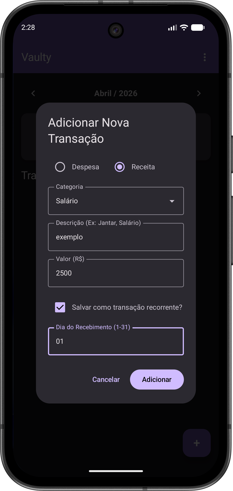
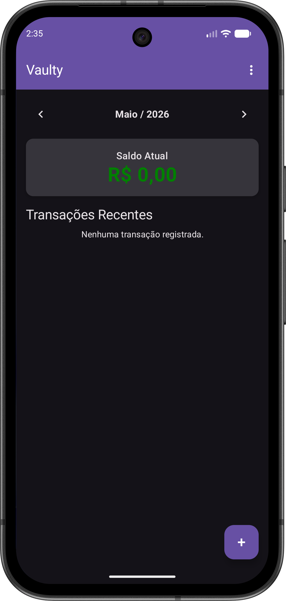
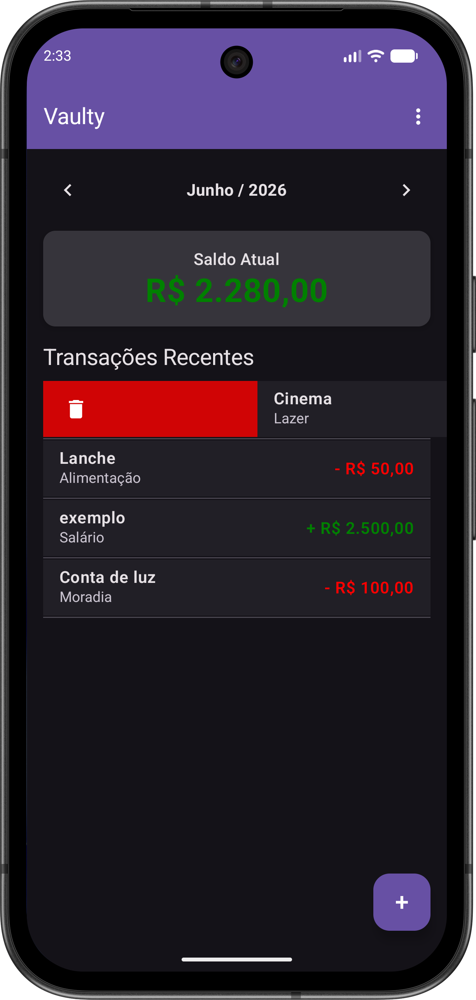
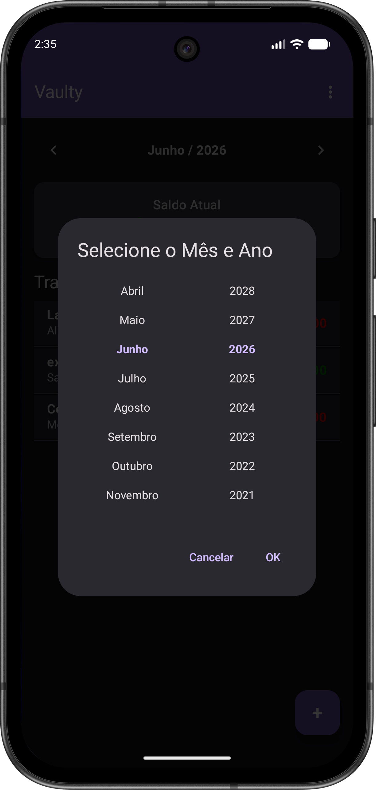
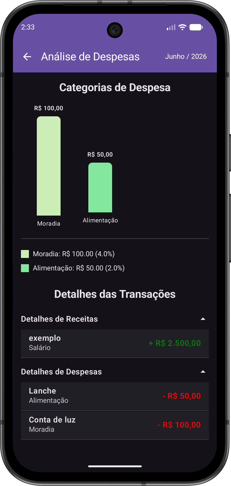
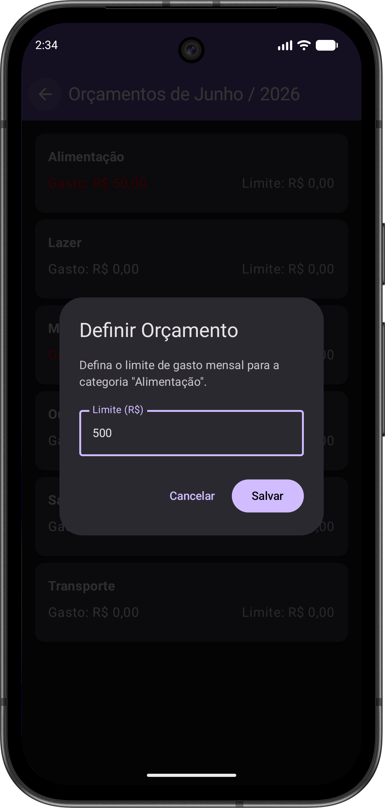
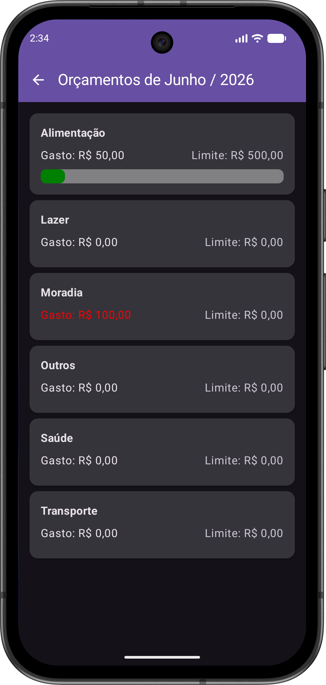
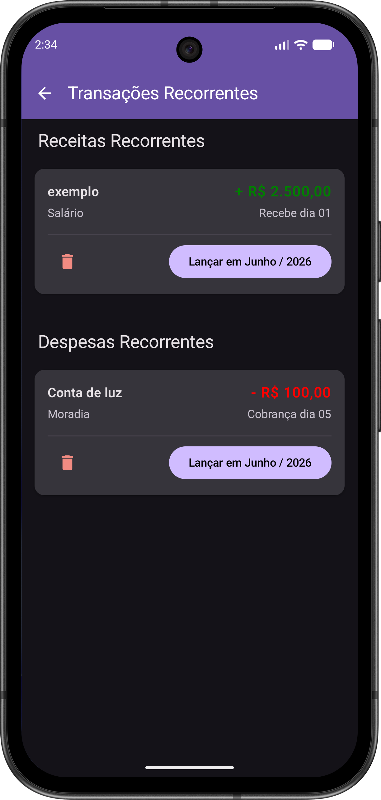
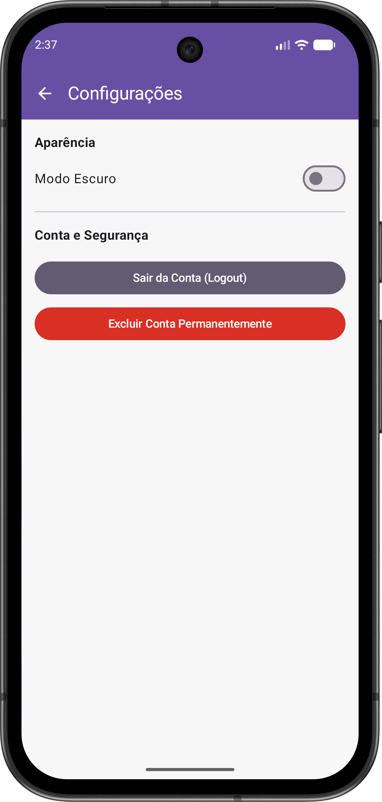
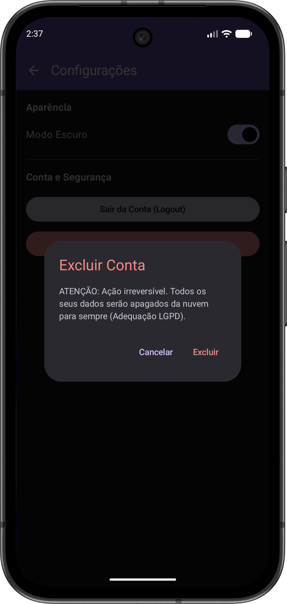

Aprenda a dominar suas finanças com a nossa tecnologia Offline-First
Faça login de forma totalmente segura utilizando sua conta do Google. Seus dados locais serão imediatamente vinculados ao seu perfil de forma criptografada.
Clique no botão de inserção na tela principal. Digite a descrição, selecione a categoria desejada, insira o valor e confirme. Os gráficos do seu painel serão atualizados em tempo real.
Utilize as setas superiores ao lado do nome do mês para navegar entre os históricos passados ou planejar os meses futuros. O sistema filtra automaticamente tudo o que pertence àquele período.
O Vaulty calcula automaticamente a transição financeira da sua vida de um mês para o outro. Entenda como funciona:
Se em maio você recebeu mais do que gastou, no primeiro milissegundo do dia 1º de junho o robô do Vaulty criará uma receita automática com o valor exato da sobra.
"Saldo positivo - mês anterior"
Se os gastos superaram seus ganhos no mês passado, o sistema descontará essa diferença logo no início do novo mês, gerando um lançamento automático de débito.
"Saldo negativo - mês anterior"
Você pode cadastrar, editar ou excluir qualquer movimentação financeira mesmo estando em Modo Avião ou sem sinal. O app salva tudo no banco interno (Room) sem nenhuma lentidão ou tela de carregamento.
Assim que o seu dispositivo detectar uma conexão estável (Wi-Fi ou 4G), nossas rotinas em segundo plano enviam as alterações em lote para o servidor seguro (Cloud Firestore) sem interromper a sua navegação.
No menu lateral, você possui controle total sobre suas informações. Ao clicar em "Limpar Dados" ou "Excluir Conta", o sistema apaga de forma definitiva seus registros locais e todos os backups salvos na nuvem.
Para abrir a opção de adicionar transações, toque no botão "+" na parte inferior direita da tela inicial.
É possível selecionar receitas ou despesas. Em ambas as opções, você pode escolher as categorias pré-definidas ou adicionar uma nova, além de inserir descrição e valor. Antes de tocar em "Adicionar", é possível salvar a transação como recorrente, seguindo o dia do recebimento. Caso opte por não marcar, a transação será registrada apenas no mês atual.
Para excluir uma transação: Caso tenha registrado algo errado ou precise apagar um lançamento, basta deslizar a transação para a esquerda na tela inicial, revelando o ícone vermelho de lixeira.



Para navegar rapidamente para outro mês ou ano, toque sobre o mês atual exibido no topo. O seletor será aberto para você escolher a data desejada de forma direta, sem precisar passar mês a mês.

Toque no menu superior (⋮) e acesse Ver Gráficos. Esta tela exibe um gráfico de barras detalhado, mostrando a proporção dos seus gastos por categoria para facilitar o controle financeiro do mês.

Toque no menu superior (⋮) e acesse Orçamentos. Toque na categoria desejada em "Orçamentos" para definir o teto de gastos. O aplicativo preencherá visualmente a barra verde à medida que as despesas ocorrerem, mantendo você no controle.


Toque no menu superior (⋮) e acesse Configurações para alternar facilmente entre o Modo Escuro e Claro, ou solicitar a exclusão permanente dos seus dados (LGPD).


